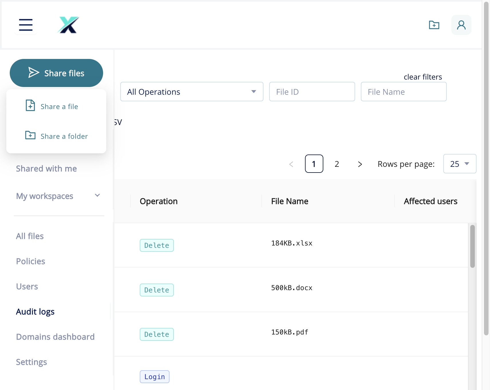
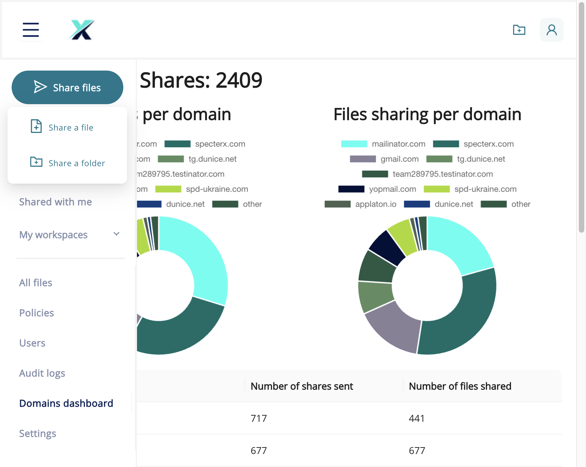

SpecterX records every file access, share, download, and login event in the Audit Logs, and surfaces sharing volume and domain breakdowns in the Domains Dashboard. Together, these two views give administrators the visibility needed to enforce compliance, investigate incidents, and understand how your organisation uses SpecterX.
Before you get started
- Permissions required. Administrators or users with the Auditors role. Auditors can view logs and dashboards but cannot modify policies or user settings.
- Data retention. Retention period depends on your subscription tier. Contact your account manager for details.
- Export format. Audit log exports are delivered as a CSV file including additional metadata columns (event timestamp, file ID, IP address) not shown in the default on-screen view.
- Limitations. The audit log shows events for files managed by your SpecterX tenant only. Events from recipients accessing a downloaded file in a third-party viewer are only captured when RMS is enabled. See RMS requirements & limitations.
Open the Audit Logs page
In the left navigation, click Audit logs. The Audit Logs page opens at /audits. The log is sorted by most recent event first and paginated at 25 rows per page.

Read the audit log table
The audit log table shows the following columns by default:
| Column | What it shows |
|---|---|
| Operation | Event type as a badge: Share, Open, Download, Delete, Login, Policy change, Permission change. |
| File Name | The name of the file involved in the event. Empty for Login events. |
| Affected users | The user who performed the action or was affected by it. |
Additional columns available in the exported CSV:
- Timestamp — exact date and time in UTC.
- File ID — internal SpecterX identifier useful for correlating events.
- IP address — the IP address from which the event was initiated.
- Policy — the security policy active on the file at the time of the event.
Filter audit log entries
To narrow the log to events by a specific user, type their email address in the User field and press Enter or click Apply.
To filter by event type, click the All Operations dropdown and select: Share, Open, Download, Delete, Login, Policy change, or Permission change.
To find events for a specific file, enter its name in the File Name field, or enter its File ID in the File ID field.
Click Apply to run the filters. Click clear filters to return to the full log.
Export the audit log to CSV
Apply any filters you need to limit the export to the events you want.
Click Export CSV at the top-right of the log table. The browser downloads a file named audit-log-<date>.csv.
Review the Domains Dashboard
The Domains Dashboard provides a high-level view of sharing activity broken down by recipient domain. It answers: Which external domains receive the most shares? and How many files are we sharing with each domain?
In the left navigation, click Domains dashboard. The dashboard shows the total number of shares across your organisation.

Review the two donut charts:
- Shares per domain — what percentage of total shares went to each recipient domain.
- Files sharing per domain — what percentage of unique files were shared with each domain.
Scroll down to the per-domain table for exact counts of shares sent and files shared per domain. Use this table to identify domains receiving a disproportionately large volume of shares.
Interpreting the data
| Signal | Possible interpretation | Recommended action |
|---|---|---|
| New external domain with a high share count | New project, partner, or accidental mass-share | Cross-reference with Audit Log filtered by that domain |
| Internal domain has a high share count | Normal — staff sharing with colleagues | No action required |
| Personal email domain (gmail.com, yahoo.com) in top 5 | Files shared to personal email — possible policy exception | Review the Audit Log for those shares; confirm authorisation |